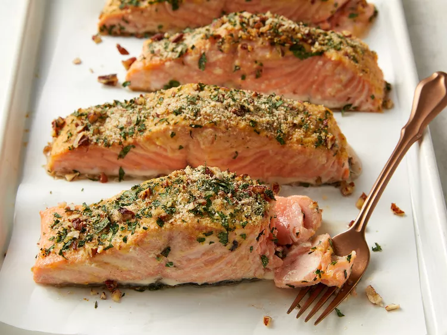

Baked Dijon Salmon

Opis
This mustard-crusted salmon is a wonderful way to prepare fresh salmon fillets in the oven. Be sure to make extra — your family will be begging for more!
Składniki
- 3 tablespoons Dijon mustard
- 1 ½ tablespoons honey
- ¼ cup dry bread crumbs
- ¼ cup finely chopped pecans
- 4 teaspoons chopped fresh parsley
- SOS
Directions
- Preheat the oven to 400 degrees F (200 degrees C).
- Stir together butter, mustard, and honey in a small bowl. Set aside.
- Mix together bread crumbs, pecans, and parsley in another bowl
- Brush each salmon fillet lightly with honey mustard mixture
-